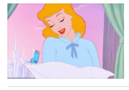
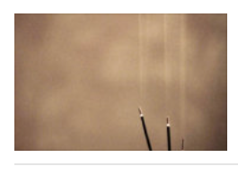

心灵创可贴
往好处想，往前方看，往目标靠近，才能不枉此生.

世上从没有被命运抛弃的人，只有被命运捆住手脚的人。 任何人的一生都不可能一帆风顺，难免会有坎坷和失意，关键是我们怎样去面对 。如果把坎坷看成是一种调味品，你就会感到坎坷的生活也有滋味； 如果把失意看作是一笔宝贵的财富， 你就会感到失意的人生也有价值。学会笑对生活，让生活照亮自己的人生。......
人生在世会受许多委屈，别因此难过，一个人越成功， 所遭受的委屈也会越多。要使生命获得极致与精彩，就不能太在意， 别让它们揪住你的心、扰乱你的生活。智者懂得隐忍，原谅那些伤害你的人， 在宽容中壮大。当你一笑置之地去对待哪些无聊的事时， 那些兴致勃勃伤害你的人便会无趣而退。...

我们总是喜欢拿“顺其自然”来敷衍人生道路上的荆棘坎坷， 却很少承认，真正的顺其自然是竭尽所能之后的不强求，而非两手一摊的不作为。 走错了路要记得回头，爱错了人要懂得放手。 你装作刀枪不入的样子，就要做好被万箭穿心的准备.......。

.生活一旦忙起来，什么情绪也没有时间表达了。难过的时候被子一蒙就睡觉， 醒来还是继续往前走。 至于未来会怎样，要用力走下去才知道， 记住先变成更喜欢的自己，再遇到一个不需要取悦的人，反正路还长，天总会亮。......
.生活一旦忙起来，什么情绪也没有时间表达了。难过的时候被子一蒙就睡觉， 醒来还是继续往前走。 至于未来会怎样，要用力走下去才知道， 记住先变成更喜欢的自己，再遇到一个不需要取悦的人，反正路还长，天总会亮。......

多希望我只是个孩子，给颗糖就笑，摔倒了就哭。 不用伪装到面目全非，不用压抑自己的心情，笑着说无所谓 ，却往往笑得越开心，心里越疼。给自己一些时间， 原谅做过很多傻事的自己，接受自己，爱自己。过去的都会过去， 该来的都在路上。....
多希望我只是个孩子，给颗糖就笑，摔倒了就哭。 不用伪装到面目全非，不用压抑自己的心情，笑着说无所谓 ，却往往笑得越开心，心里越疼。给自己一些时间， 原谅做过很多傻事的自己，接受自己，爱自己。过去的都会过去， 该来的都在路上。....
过好每一天，就是过好一生。有哭有笑，生活总带给人一种感动，生活总带给人一种惊喜，生活总让你回味的想念。 每一条通往阳光的大道，都充满坎坷。但越过这些坎坷，必将看到希望的曙光。总有一段难熬的日子 ，让你自我怀疑，不过当你经历多一点，你会发现，那只是生活的常态。.....

眼里没你的人，你何必放心里；情里没你的份，你何苦一往情深。但同时记住， 永远不要因为新鲜感，扔掉一直陪伴你的人 。那些平淡与安静，亦是心灵的另一种力量。.过好每一天，就是过好一生。有哭有笑，生活总带给人一种感动，生活总带给人一种惊喜，生活总让你回味的想念 。每一条通往阳光的大道，都充满坎坷。但越过这些坎坷，必将看到希望的曙光......。

喜欢这句话“为值得的人赴汤蹈火，对闲杂人等别在乎太多”， 做有价值的事让他人说去吧。不思进取怨天忧人最可悲， 积极的人生就要有一分热发一分光，做力所能及的事是做人的最基本的要求。 为自己天天开心快乐容易，而能让家人都高兴才难，人们很多时都是以亲人的喜而喜乐而乐， 所以啊，努力为自己的同时应该想到他们。......
关注我们：丹丹网 作者：邱丹丹 倾情制作 侵权必究！！！
关注支持：微信 QQ 微博 新浪 Do things you've loved.
Do what you will benefit for life.